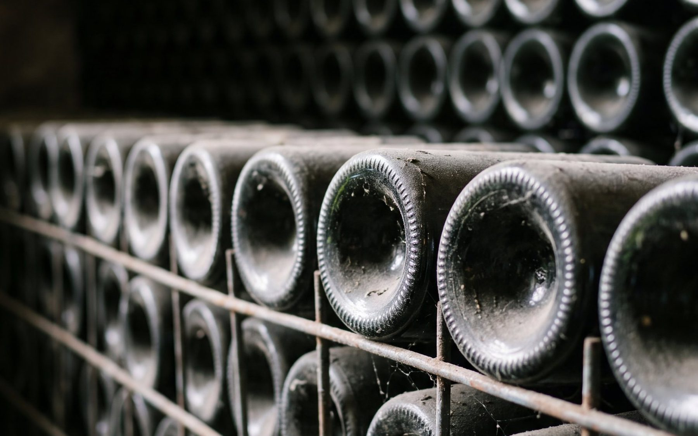
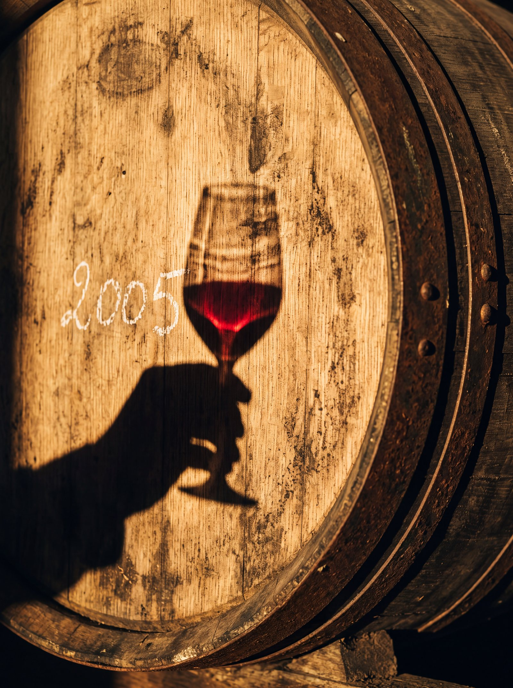
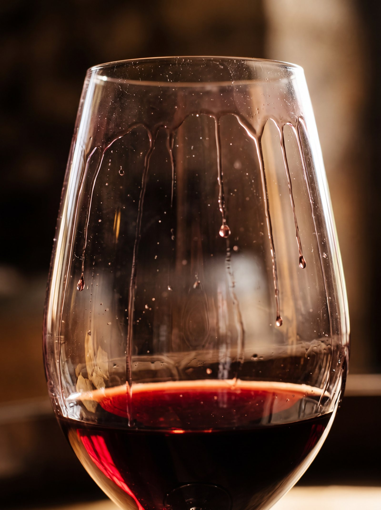

Vin prêt à boire : quand ouvrir un bordeaux ?
On achète souvent un bordeaux l’année de sa sortie, et on l’ouvre dans la semaine. Pourtant, beaucoup de vins rouges ont besoin de quelques années pour donner le meilleur d’eux-mêmes. Qu’est-ce qu’un vin « prêt à boire », comment le reconnaître, et comment le servir ?

Pourquoi un vin n’est pas toujours prêt à sa sortie
Un vin rouge jeune contient des tanins. Ils viennent de la peau et des pépins du raisin, et ils donnent en bouche une sensation de sécheresse, un peu comme un thé trop infusé. Ce sont eux qui donnent au vin sa structure et lui permettent de vieillir. Mais dans un vin trop jeune, ils peuvent masquer le fruit et paraître durs.
Avec le temps, en bouteille, les tanins s’assouplissent et les arômes évoluent. Le fruit frais (cassis, cerise) laisse place à des notes plus profondes : fruits mûrs, épices, cuir, sous-bois. Le vin gagne en harmonie. C’est ce moment que l’on appelle « prêt à boire ».
Combien de temps faut-il attendre ?
Tout dépend du vin. Trois repères simples :
- Les vins fruités et souples, souvent riches en merlot, sont agréables assez tôt, parfois dès leurs premières années.
- Les vins structurés, riches en cabernet-sauvignon, demandent plus de patience et peuvent souvent se garder dix ans ou davantage.
- Le millésime compte : une année chaude donne souvent des vins plus vite accessibles ; une année plus fraîche, des vins plus tendus, qui gagnent à attendre.
Pour comprendre d’où viennent ces différences, voyez notre article merlot ou cabernet-sauvignon.
Un vin qui attend trop longtemps finit par décliner : le fruit s’efface et le vin devient maigre. Il existe donc une fenêtre, plus ou moins longue, pendant laquelle le vin est à son meilleur.
Comment savoir si un vin est prêt à boire ?
- Regarder la couleur : un rouge jeune a des reflets violets. En vieillissant, il prend des reflets grenat, puis tuilés, c’est-à-dire orangés, sur le bord du verre.
- Sentir : les arômes d’un vin prêt sont plus complexes que le seul fruit frais.
- Goûter : les tanins doivent paraître fondus, sans assécher la bouche.
- Se renseigner : la contre-étiquette ou la fiche du vin indique souvent une période de dégustation conseillée.
La méthode la plus sûre reste d’acheter un vin que le producteur a lui-même gardé jusqu’à son moment.
Le choix de la famille Miailhe : attendre pour vous
Dans la plupart des domaines bordelais, le vin quitte le château jeune, et c’est à celui qui l’achète de l’attendre, à condition d’avoir une cave. La famille Miailhe fait l’inverse. À Coufran et à Verdignan, les bouteilles vieillissent au château, dans un local climatisé, et ne sont mises en vente que lorsque le vin est prêt.
Depuis le millésime 2005, chaque bouteille porte un numéro de lot gravé, qui permet de retracer son parcours. On peut ainsi acheter un vin d’une dizaine d’années ou plus, conservé dans de bonnes conditions, sans avoir à le faire vieillir chez soi. C’est cette patience que raconte l’histoire d’une bouteille de Verdignan 2005.

Bien servir un vin prêt à boire
La température
Un bordeaux rouge se sert entre 15 et 18 °C : plus frais pour un vin fruité et souple, autour de 15 à 16 °C, un peu plus chaud pour un vin structuré, autour de 17 à 18 °C. Au-delà de 18 °C, l’alcool ressort et le vin paraît lourd. En été, un quart d’heure au réfrigérateur avant de servir ne lui fait pas de mal.
Carafer ou décanter ?
- Carafer un vin jeune l’aère : versé dans une carafe une heure avant, il s’ouvre plus vite.
- Décanter un vin plus âgé sert surtout à le séparer de son dépôt, ces particules naturelles qui se forment avec le temps. On le fait juste avant de servir, doucement, car un vin âgé est plus fragile à l’air.
- Dans le doute, ouvrez la bouteille une heure avant, et goûtez.
Le verre
Un verre à pied, assez large, rempli au tiers : le vin a la place de s’aérer, et ses arômes se concentrent vers le haut du verre.

Questions fréquentes
Un vin prêt à boire peut-il encore se garder ?
Oui. « Prêt à boire » signifie que le vin est entré dans sa période de dégustation. Beaucoup de bordeaux y restent plusieurs années, à condition d’être conservés couchés, à l’abri de la lumière, à une température stable d’environ 12 °C.
Combien de temps se garde une bouteille ouverte ?
Rebouchée et placée au frais, une bouteille de vin rouge se garde en général deux à trois jours.
À quoi sert le numéro de lot gravé sur les bouteilles de Coufran et de Verdignan ?
Depuis le millésime 2005, il permet de retracer l’origine et le parcours de chaque bouteille, du chai jusqu’à sa mise en vente, après son vieillissement au château.
L’abus d’alcool est dangereux pour la santé, à consommer avec modération.